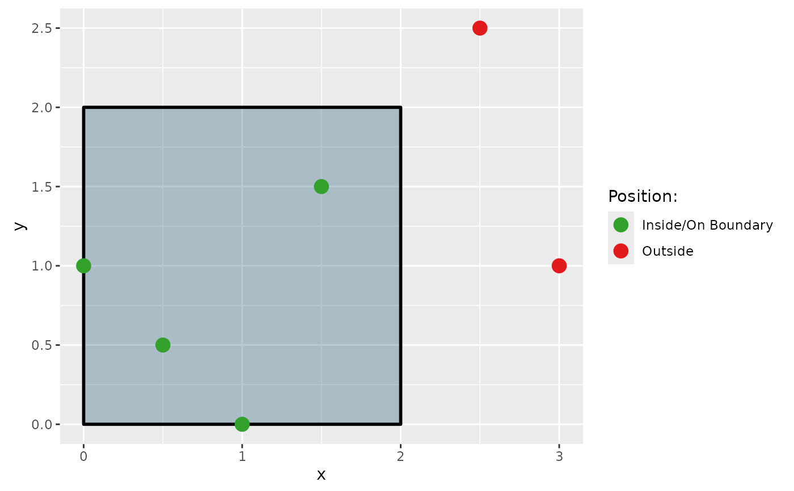

![[Experimental]](figures/lifecycle-experimental.svg)
Tests whether points are inside a polygon using Cartesian coordinates. Distinguishes between points that are inside, outside, or on the polygon boundary.
Details
The function uses the sf package's geometry operations with Cartesian coordinates. If the provided polygon's first and last vertices are different, it is not considered to be a closed polygon. If this occurs, it will be automatically closed. All input vectors must be numeric, and point_x/point_y must have matching lengths, as must poly_x/poly_y.
Examples
# point_in_polygon can be used with basic vectors#
# X points we want to check the position of relevant to the polygon
point_x <- c(0.5, 1.5, 2.5, 1.0, 3.0)
# Y points we want to check the position of relevant to the polygon
point_y <- c(0.5, 1.5, 2.5, 0.0, 1.0)
# X points of the polygon we want to test against
poly_x <- c(0, 2, 2, 0, 0)
# Y points of the polygon we want to test against
poly_y <- c(0, 0, 2, 2, 0)
# 0 = outside polygon, 1 = inside polygon or on boundary
point_in_polygon(point_x, point_y, poly_x, poly_y)
#> [1] 1 1 0 1 0
# point_in_polygon can also be used within a data frame#
library(dplyr)
test_data <- data.frame(px = c(0.5, 1.5, 2.5), py = c(0.5, 1.5, 2.5))
polygon_x <- c(0, 2, 2, 0, 0)
polygon_y <- c(0, 0, 2, 2, 0)
test_data |>
mutate(logic = point_in_polygon(px, py, polygon_x, polygon_y))
#> px py logic
#> 1 0.5 0.5 1
#> 2 1.5 1.5 1
#> 3 2.5 2.5 0
# You can also see the results of the function visualized on a ggplot#
library(ggplot2)
# Create test points and polygon for visualization
df_points_prep <-
tibble(
x = c(0.5, 1.5, 2.5, 1.0, 0.0, 3.0),
y = c(0.5, 1.5, 2.5, 0.0, 1.0, 1.0)
)
df_polygon <-
tibble(
x = c(0, 2, 2, 0, 0),
y = c(0, 0, 2, 2, 0)
)
# Test the points and add labels for the plot
df_points <-
df_points_prep |>
mutate(
position = point_in_polygon(x, y, df_polygon$x, df_polygon$y),
position_string = case_match(position,
0 ~ "Outside",
1 ~ "Inside/On Boundary"
) |> factor(),
color = case_match(position,
0 ~ "#e31a1c",
1 ~ "#33a02c"
)
)
# Pull out the colors for the plot points
unique_df <- unique(df_points[c("position_string", "color")])
vec_colors <- setNames(unique_df$color, unique_df$position_string)
# Plot it
ggplot() +
geom_polygon(data = df_polygon, aes(x = x, y = y),
fill = "#104d70", alpha = 0.3, color = "black", linewidth = 1) +
geom_point(data = df_points, aes(x = x, y = y, color = position_string), size = 4) +
scale_color_manual(values = vec_colors) +
labs(color = "Position:") +
coord_equal()
